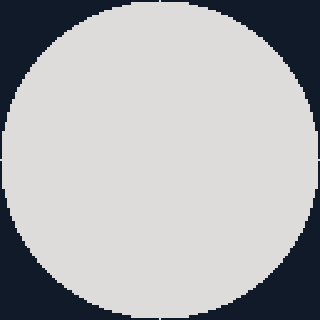
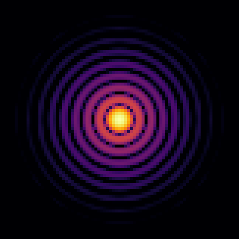
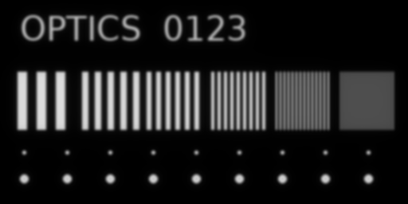
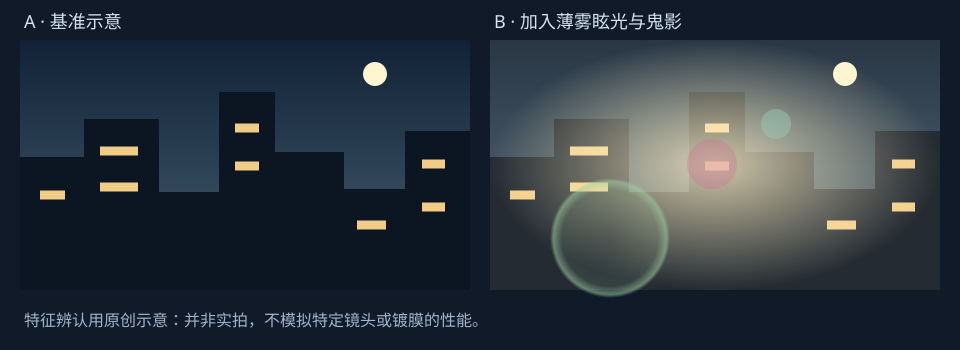

从光怎样传播，到照片为什么这样
读懂镜头，先读懂它怎样改变一束光。
按章节学习，也可以直接打开像差图鉴。公式解释数量关系，示意图解释结构，计算成像展示结果。手机上的宽图可横向滑动。
00 / 概念地图
先把“原因、现象、指标、解决办法”分开。
例如，玻璃有色散 → 不同颜色折射程度不同 → 产生轴向或横向色差 → 照片出现彩边 → 用材料与光焦度组合校正。这条链上的词不能互换。“像差”和“色散”不是同一层级，镜头上的 ED、AS 也不是某种画质评分。
衍射、干涉
孔径、光阑、对焦组
像差、暗角、杂散光
通光量、焦外表现
先建立一个统一想象：夜景里一盏极小的远处灯，是一个近似物点。镜头把它成像后，可能成为圆点、光晕、彗星形、带彩边的斑点。把一张照片的所有物点都这样处理，再叠加起来，就是最终图像。这个“一个点怎样变成像”的描述，是后面理解像差与 MTF 的桥梁。
01 / 成像几何
焦距决定成像尺度，机位决定透视。
折射率、折射与光焦度
折射率 n描述光在介质中的相速度与真空光速的关系，n = c/v。跨越界面时，光的频率不变，速度与波长改变；入射与折射方向满足 n₁ sin θ₁ = n₂ sin θ₂，角度从界面的法线量起。透镜利用不同位置的表面法线方向，把一束光改变成会聚或发散的光束。
正透镜对平行光有会聚作用，负透镜有发散作用。光焦度 Φ = 1/f，f 用米时单位为屈光度 D；它不是光圈。约 50 mm 的正透镜光焦度为 +20 D。完整镜头可以含有很强的正片和负片，最后只保留较温和的净会聚能力。
| 术语 | 严谨含义 | 常见误解 |
|---|---|---|
| 有效焦距 EFL | 系统在近轴条件下的成像尺度；空气中，像方主平面到后焦点的有符号距离。 | 不是镜头外壳长度，也不是前镜片到传感器的距离。 |
| 焦点 / 焦平面 | 轴上平行光会聚处为后焦点；近轴小角度平行光的理想像点落在相应焦平面。 | 有限距离的物体合焦时，其像面通常不位于无限远后焦平面。 |
| 主平面 / 节点 | 把复杂厚镜头等效成一阶成像系统的参考面和参考点；两侧介质相同时，相应节点与主点重合。 | 这些参考位置可以落在玻璃外。所谓“无视差旋转点”通常与入瞳有关，不能简单叫节点。 |
| 后焦距 BFL | 从最后光学面顶点到后焦点的轴向距离。 | 不是有效焦距。广角反望远结构可有短焦距而长后焦距。 |
| 法兰距 | 机身卡口安装基准面到传感器面的机械距离。 | 与后焦距、焦距不是同一个量。 |
| 像圈 / 画幅 | 镜头可覆盖的圆形成像区域，以及传感器从中截取的矩形。 | 覆盖到了不等于整个区域都一样清晰或一样明亮。 |
焦距、视角、等效焦距
理想直线投影、无限远对焦时，某一方向的视角近似 α = 2 arctan(d / 2f)，d 是传感器在该方向的长度。必须说清楚“水平、垂直还是对角视角”。同一焦距，画幅越小，截取的视野越窄；镜头的实际焦距并没有变。
例如“APS-C 上的 35 mm 相当于全画幅约 52.5 mm”，是约 1.5×裁切下的视角对应。35 mm 仍是 35 mm，f/1.8 的标称曝光含义也仍是 f/1.8。若进一步比较景深，要同时匹配机位、构图与最终观看尺寸；不能把“等效”当成所有性质都完全相同。
透视、压缩感与广角拉伸
在近似针孔模型里，物体像高与 f × 物体高度 / 距离 成正比。两个物体的相对大小主要由它们与相机的距离比例决定。站在原地换焦距，再把广角照片裁成相同视野，透视关系基本一致，忽略镜头投影差异与入瞳位置的小变化。
通常用长焦拍同样大的主体时，你会退得更远；退远以后，主体和背景与相机的距离之比更接近，于是背景显得更大、更“贴近”主体。35 mm 靠得很近拍脸时，鼻子比耳朵更靠近相机，相对比例被放大。这是拍摄距离的影响，不应笼统归咎为镜头桶形畸变。
直线投影广角在边缘还有把较大角度映射到平面上的拉伸；鱼眼则主动采用不同投影，让很多直线弯曲以容纳极大视角。这些投影选择也不能全叫“镜头做坏了”。
资料：Edmund：焦距与视场。
02 / 光圈与对焦
光圈控制光锥，对焦决定光锥在哪里收拢。
动手：把 35 mm、50 mm 与光圈放进同一个模型
薄透镜计算假定全画幅宽 36 mm，入瞳位于薄透镜处，背景固定距镜头 20 m。距离从主平面量起。光路是结构示意、横纵比例不同；数值由薄透镜公式计算。商用内对焦镜头在近距离可能偏离此模型。
光圈值 f/N 与入瞳
N = f / D，D 是从物方看进去时光阑所成的像——入瞳——的直径，不一定等于光圈叶片孔径，也不等于前镜片或滤镜口径。50 mm f/2 的入瞳直径约 25 mm；同样 50 mm f/4 为 12.5 mm。
在同场景、同快门及相近透过率下，轴上像面照度近似正比于 1/N²。f 值乘 √2，光量约减半，也就是收小一挡。f/1.4 → f/2 → f/2.8 → f/4 → f/5.6 → f/8 是常见整挡序列。这里“孔径”常说直径，而采光量对应面积，不能线性相加。
T 值再考虑光学透过率 τ：T = N / √τ。例如几何 f/2、透过率 81%，对应约 T2.22。T 值便于匹配曝光；景深与衍射主要仍由孔径几何和工作条件决定。增益 ISO 则发生在成像记录环节，不会把 f/4 变成 f/2 的光锥。
对焦、失焦、弥散圈
近轴薄透镜满足 1/f = 1/u + 1/v。不同物距 u 对应不同像距 v。对焦机构移动整个光学系统或内部镜组，让目标的像落在传感器上。相机显示“合焦”，也不意味着每一根光线都能完美到同一点，像差与衍射仍存在。
假如一个物点应该在传感器后方会聚，但传感器提前截断了光锥，就得到一个有限大小的弥散斑。几何近似下常把它当圆形；实际形状还受孔径、像差和口径蚀影响。容许弥散圈 CoC是你愿意把多大的斑点仍视作“足够清晰”的判断阈值，并非镜头常数。
景深、焦深、超焦距
景深是在不重新对焦时，物方仍满足清晰度要求的距离范围；焦深是在像方，传感器或像面位置能容许的偏差范围。放大观看、近距离观看或要求更多细节时，容许弥散圈应更小，算出来的景深也更窄。严格说，理想模型里只有一个物平面完全合焦，其余只是“足够接近”。
超焦距近似 H = f²/(N c) + f，其中 c 为容许弥散圈直径。对到 H 时，远界到无限远，近界约为 H/2。“在景深内”不等于“和焦点处一样锐”；把重要远景放在容许模糊的边界，可能不符合高像素放大检查的要求。
更大光圈、更近拍摄通常会减少景深。比较焦距影响必须说明是否保持机位或主体构图：同机位下换长焦与退远保持同构图，是两种不同实验。“景深固定前 1/3、后 2/3”也不是普适定律，前后分配随条件变化。
呼吸效应、焦点漂移与近摄
呼吸效应：改变对焦距离时，画面视角或成像尺度也变化，视频拉焦时像轻微变焦。焦点漂移 focus shift：常指收光圈后最佳焦点位置改变，残余球差可导致这一现象。变焦不齐焦：改变焦距后需要重新对焦；parfocal（齐焦）设计着重保持焦点，varifocal 则不保证。三者不是一回事。
放大倍率是传感器上的像尺寸 / 实物尺寸；1:1 表示 10 mm 物体在传感器上长 10 mm。最近对焦距离通常从传感器平面量起，工作距离从镜头前端到被摄体量起。近摄时实际入射光锥、有效光圈、焦距与瞳孔放大率都可能变化，不能简单套用无限远曝光和景深直觉；对称薄透镜近似下工作 f 值约为 N(1+m)。
03 / 光线与波动
一束光不仅有方向，还有相位。
光线追迹适合解释“光从哪里经过、会到哪里”。但孔径有限时，光具有波动性，不能只把最终结果看成一堆无宽度的线。波前是同一相位的位置组成的面；理想会聚波可以用以焦点为中心的球面波前描述。
光程 OPL = ∫n ds同时考虑走过的长度与折射率。理想会聚要求各处光的相位关系合适。实际波前相对参考理想波前的光程偏差，叫 OPD / 波前像差，可以用 nm，也可以用多少个波长（waves）表示。同样 50 nm 的偏差，对 400 nm 蓝紫光比对 700 nm 红光更严重。
PSF（点扩散函数）是点光源的强度分布。对于近似线性、局部平移不变、非相干成像，图像可以看成物体强度与 PSF 的卷积。PSF 的傅里叶变换得到 OTF，OTF 的幅值部分就是 MTF。所以“点像变大”与“细条纹反差降低”其实是同一套成像过程的不同描述。
“几何点列图”与“衍射 PSF 图”不能混为一谈：前者画光线落点，后者计算相位干涉后的能量分布。上一页实验室是几何追迹；下面图鉴则用标量傅里叶光学计算。两者适用层次不同，不应直接把数值互相替代。
04 / 像差成像图鉴
同样叫“糊”，一个点的糊法可以完全不同。
下面先只用 550 nm 单色光，排除色差。点击一种现象，左边看波前，右边看点像，底部看它对条纹、文字和点阵的影响。计算中的像差模式被单独施加，现实镜头往往是几种混合。


亮度范围：理想峰值的 10⁻⁴ → 1

f/4、550 nm、均匀圆形入瞳，19 组预计算结果。测试图宽 281.6 μm。PSF 使用对数显示以看清弱光环；下方成像使用线性强度，不能按上方颜色亮度估计照片反差。系数定义与数值误差见资料章。
球差：不只是“没对上焦”
同一轴上物点、同一颜色，经过中心附近和边缘的光线交轴位置不同。常见单正透镜的边缘光线可能更早会聚，但校正后的系统也可出现相反符号，因此不能死记“边缘一定焦在前面”。把传感器前后移动只能选择一个折中焦面，无法同时让所有孔径区完美重合。
照片中可能表现为清晰核心外罩柔光，降低微小细节的反差，也会改变焦前和焦后的散景。收光圈屏蔽边缘光线，通常能减轻球差，但不代表总画质会随收光圈无限改善；之后还有衍射。非球面、合理镜片弯曲、材料与光焦度分配都可参与校正。
彗差：画面边上的灯为什么像小翅膀？
对于离轴物点，不同孔径区贡献的位置和成像尺度不同，形成不对称的点像。星空、夜景灯点、车灯高反差边缘特别容易暴露它。实际镜头里常与像散混合，出现鸟翼、三角、拉尾等形态；看到“小翅膀”不能凭形状就把其他像差全部排除。
收光圈通常有帮助；光阑位置、镜片形状、非球面及系统对称性也会影响它。相机抖动和星轨同样能把点拉长，但往往有全画面方向规律或随曝光时间改变，诊断时要先排除。
像散：为什么横向清楚，纵向却糊？
离轴物点的切向和弧矢光束有不同最佳焦位置，两个典型线焦之间存在折中区域。图鉴选择“朝一个线焦面移动”，再选“朝另一个”，能看见点像伸长方向改变。中间位置可能较接近圆或呈复杂十字分布，不一定始终是椭圆。
镜头的离轴像散与眼科里常见的“散光”概念有联系，但镜头即使各镜片绕轴旋转对称，也能出现离轴像散；不必存在一块肉眼看起来歪斜的镜片。偏心或装调误差还会带来额外、非对称的像差。
05 / 材料与颜色
色散是材料性质，色差才是成像后果。
普通光学玻璃在可见光正常色散区，短波光的折射率通常更高，单正透镜对蓝光的聚焦通常更强。但这是常见材料和结构下的趋势，不是宇宙中任何介质都必须如此。更完整的材料行为由 n(λ) 曲线描述。
真实材料数据：两种玻璃的色散
使用 SCHOTT Sellmeier 系数；纵轴 n(λ) − n(587.6 nm)，因此两曲线在 d 线均为 0，不代表绝对折射率相同。
| 术语 | 原理 | 结果与对策 |
|---|---|---|
| 阿贝数 Vd | (nd−1)/(nF−nC)；衡量选定可见波段的相对色散，V 大通常意味着色散较弱。 | 不是折射率本身，也不是越大就一定能做出越好的镜头。只靠一个 V 无法描述完整光谱形状。 |
| 轴向色差 / 纵向色差 Longitudinal CA / LoCA | 不同颜色的最佳焦面在光轴方向上前后错开。 | 中心也可能出现；焦前焦后高反差边缘呈不同颜色。通常不能只靠缩放颜色通道彻底修好。收光圈可减轻可见模糊，但并未改变材料色散。 |
| 横向色差 / 倍率色差 Lateral / Transverse CA | 不同颜色在同一像面上的成像倍率不同。 | 常在边缘表现为两侧不同颜色的轮廓，理想对称系统轴上为零。通常可用通道几何校正改善；收光圈一般不是主要解法。 |
| 二级光谱 | 消色差双片让两个选定波长重合后，其他波长仍存在残余焦差。 | “消色差”不等于所有颜色从此完全重合。材料的异常部分色散可帮助进一步校正。 |
| 球色差 / Spherochromatism | 球差本身随波长变化。 | 即使不同颜色的近轴焦点一致，全孔径边缘光线仍可能对不齐；不能只检查三条近轴光线。 |
| APO / 复消色差 | 比普通消色差更严格地控制多波长焦差，传统定义涉及多波长与球差校正。 | 摄影商品命名的严格程度不完全一致；它不是一个可跨厂商直接比较的“零色差认证”。 |
| 紫边 | 一种看到的颜色现象，不是唯一的物理病因。 | 可能涉及轴向色差、球色差、传感器过曝或处理流程。不能看到紫色就断定“ED 数量不够”。 |
辨认：两种色差的轮廓
夸张示意 / 非镜头实测左：三个颜色成分同中心但模糊尺度不同；右：各颜色的图像倍率不同。通道颜色和程度仅为辨认现象的示意，没有指定真实玻璃处方。
正低色散片与负高色散片配合，可以让色焦差互相抵消，同时留下净正光焦度。薄片接触近似下的条件是 Φ₁/V₁ + Φ₂/V₂ ≈ 0。这也说明：把所有镜片都换成同一种“好玻璃”不一定更好，设计需要适合相互补偿的材料组合。
去组合实验室，选择双胶合，再把第二片也改成 N-BK7，就能直接观察这种补偿关系被破坏。非球面改变面形；ED 改善材料色散选择，两者各有所长，也可以出现在同一片元件上。
06 / 画面位置与亮度
直线弯了、四角暗了、边缘不合焦，是三件事。
畸变 distortion
理想投影位置和实际位置不一致，常用 (实际像高−理想像高)/理想像高 表示相对畸变。桶形：周边相对向中心收缩；枕形：周边相对向外扩张；波浪形：不同像高处的符号或变化趋势不同。图中使用径向多项式映射，展示几何关系，并非某镜头实测曲线。
畸变不必让一个点变糊，它主要把点放错位置。软件可以把已知的位置关系映射回来，但拉伸与插值会改变边缘有效采样，也可能裁掉视野。不能把“可软件修正”等同于没有任何代价。
仰拍建筑出现梯形，主要是相机姿态与平面投影形成的透视关系，不等同于桶形、枕形镜头畸变。两者可以叠加出现，后期操作也常分别叫“几何/透视校正”和“镜头畸变校正”。
场曲 field curvature
在没有像散的理想化描述下，各个视场的最佳像点可能落在弯曲表面，而不是平面传感器上。于是拍平墙时，中间合焦，边缘可能需要略微前后调整对焦才能更清楚。边缘重对焦后明显改善，是场曲的一条线索，但也可能混有像散、倾斜、目标不平或偏心。
真实镜头可以有复杂的场曲形状，不一定是简单圆碗。像散存在时，切向与弧矢还各有自己的焦面。近似的 Petzval 和涉及各界面的折射率和曲率，说明正负光焦度与材料配置会影响平场能力；加一个“平场片”也必须放在完整系统里设计。
暗角、相对照度与口径蚀
暗角 / vignetting是边缘比中心暗的总表现。可以来自自然照度下降、内部孔径对斜光束的遮挡、滤镜或遮光罩等外部机械遮挡，以及传感器对入射角的响应。简单理想投影常见 cos⁴θ 照度规律，但它不是所有现代摄影镜头精确适用的完整暗角模型。
光学口径蚀会截掉离轴光束的一部分，一方面使角落变暗，另一方面让离轴散景光斑呈猫眼状。收光圈常能减轻光学口径蚀，但由其他因素引起的暗角不一定一起消失。软件提亮四角会放大该区域的噪声，不能补回从未收到的光子。
07 / 有限孔径的代价
缩光圈减轻一些像差，却让衍射斑变大。
光经过有限孔径后，波会发生衍射。理想均匀圆形孔径的点像呈亮核心与逐渐变弱的同心环。通常把中央亮斑到第一暗环之间称为艾里斑；“Airy disk”有时也被宽泛地用于描述整套图样，读资料时要分清。
动手：光圈、颜色与像素尺度
理想圆孔解析模型近轴、非相干、均匀无像差圆孔。左图半径范围固定为 30 μm，以 I^0.25 显示弱环；右侧分别给光学 MTF 与其乘以满填充方形像素孔径响应后的预采样 MTF。虚线为像素 Nyquist，不是突然变糊的物理开关。
第一暗环半径约 r = 1.22 λN，直径 d = 2.44 λN。550 nm 下，f/4 约 5.37 μm，f/8 约 10.74 μm，f/16 约 21.47 μm。别把半径和直径混着比较。长波红光的衍射斑比短波蓝光更大。
不存在一个通用光圈，跨过去照片就突然报废。衍射一直存在，只是相对像差、像素与最终输出要求的影响大小不同。为了更大景深、避免曝光过量或获得星芒，使用 f/11、f/16 可能是合理取舍。对纯粹像素级细节来说，最佳光圈通常是像差下降与衍射增大的折中，具体值应实测。
分辨率、像素间距与 Nyquist
分辨率描述区分相邻细节的能力，但要指定反差阈值和测试方式。空间频率常用 lp/mm（线对每毫米）；一黑一白算一个线对。像素间距 p为相邻像素中心距离，一维规则采样 Nyquist 频率是 1/(2p)。超过它的结构可能混叠，出现假纹理或摩尔纹。
“艾里斑大于一个像素，所以高像素没用”是错误推论。真实图像由连续频率构成，光学响应逐步衰减；较密采样仍可能改善记录与重建。拜耳阵列、低通滤镜、去马赛克、锐化和缩图也会影响结果，简单 Nyquist 线不能完整描述彩色相机解析力。
机震、运动模糊和热扰动不是镜片本身的固有像差，但都改变最终有效 PSF。长焦拍远处被热空气扰乱、慢门人物移动，即使镜头 MTF 再高也无法保证细节清晰。
08 / 评价指标
MTF 不是“这支镜头有多少像素”。
用明暗正弦条纹作为输入，其调制度可写作 C = (Imax−Imin)/(Imax+Imin)。系统把条纹的明暗差减弱后，MTF = 输出调制度 / 输入调制度。粗条纹对应低空间频率，细条纹对应高频；镜头可能保留了粗轮廓，却把极细纹理变成灰色。
输入调制度固定为 1，输出调制度由滑块直接设置；这是 MTF 定义示意，不是某镜头预测。条纹频率固定，平均强度保持一致。
| 指标或图形 | 读法 | 不能由它直接推出 |
|---|---|---|
| MTF–空间频率曲线 | 横轴 lp/mm，纵轴 0–1 或 0–100%。在指定视场、光圈、物距和光谱下，比较粗细细节的反差传递。 | 不能脱离条件跨镜头或跨测试系统比较。 |
| 摄影镜头常见 MTF–像高曲线 | 横轴是从画面中心到边缘的距离 mm；多条线代表固定的 10、20、30、40 lp/mm 等频率及方向。全画幅角落像高约 21.6 mm。 | 横轴不是频率。曲线向右下降通常在讲边缘，不是在讲更细的条纹。 |
| S / T 或 S / M | 弧矢与切向两种正交方向的响应。厂商对线型、颜色及方向标记须按图例核对。 | 两线分离不能单独量化纯像散；彗差等也能影响方向差异，更不能直接算成焦外好坏。 |
| MTF50 | MTF 降到 0.5 时对应的空间频率，常用于描述锐度。 | 不是最高可分辨频率，也不是全部画质。锐化和测试流程可显著影响它。 |
| PSF / 点列图 RMS | PSF 是强度分布，几何点列 RMS 是光线位置统计；单位和归一化须明确。 | 同 RMS 可有不同核心、光晕和拖尾，不能由单一半径还原整套 PSF。 |
| Strehl 比 | 相同孔径、波长和总能量条件下，实际点像峰值 / 理想点像峰值。用于判断接近衍射极限的程度。 | 不是全画面评分，低比值不能直接转换为“损失了多少像素”。 |
| 波前 RMS / P–V | RMS 是整体统计偏差；P–V 是峰谷最大差。常以波长为单位。 | 同一 P–V 可能对应很不同的误差分布；还要说明是否去掉倾斜、离焦。 |
锐度、反差、微反差与“空气感”
锐度是视觉上的清晰程度，既受高频细节传递影响，也受边缘反差、锐化光晕、观看尺度影响。解析力更偏向区分细节；反差是明暗差异的传递。两支镜头即使极限分辨能力接近，细节反差不同，也会有一支显得更“脆”。
“微反差”可以合理地指小尺度明暗变化的保留，但摄影讨论中的定义并不统一；“德味、立体感、空气感”更不是标准化光学单位。照明、主体纹理、色调、景深过渡和后期都能改变这些感受。不能只凭材料片数或一张压缩样片就反推出神秘光学属性。
读 MTF 时至少检查：实测还是设计值、是否含衍射、光圈、焦距、物距、波长/白光权重、机身与软件处理。对于变焦，广角端的曲线不能代表长焦端；无限远的优秀表现也不自动等于近摄优秀。
09 / 清晰区域之外
虚化多少，与虚化是否好看，是不同问题。
虚化量可通过离焦斑大小来描述；bokeh / 焦外质感讨论斑点内部能量、轮廓、形状、重叠方式和过渡。两支镜头背景同样糊，也可能一支柔顺，另一支有明显双线或硬边。
四种焦外斑的辨认示意，不是指定镜头或精确 PSF。它们说明形状与能量分布的差异；不能据此给某种非球面技术打分。
| 现象 | 主要相关因素 | 如何理解 |
|---|---|---|
| 柔顺 / 双线焦外 | 离焦斑内部亮度分布，残余球差及其他像差。 | 亮边斑叠加后容易形成硬边或双线；焦前与焦后可能不同。一侧好看不保证另一侧也同样好看。 |
| 多边形光斑 | 光圈叶片形成的孔径形状。 | 收光圈后更可能看到多边形；叶片数量、弧度和实际开口状态共同决定。 |
| 猫眼 / 口径蚀 | 离轴光束被前后光学或机械孔径部分截断。 | 越靠画面边缘越明显，可伴随旋转感；不一定是故障。 |
| 洋葱圈 | 细微面形结构、制造加工纹理等在离焦点像中的显现。 | 可能与非球面加工有关，但不是所有非球面必然出现，也不能仅凭圈纹识别工艺。 |
| 旋转焦外 | 画面边缘斑形方向分布、口径蚀及离轴像差组合。 | 属于复杂整体表现，不能只归因于“场曲很大”。 |
| 星芒 / 光圈衍射尖峰 | 孔径边缘的衍射及叶片几何。 | 理想规则直边光圈中，偶数叶片常见同数量尖峰，奇数叶片常见两倍；弧形叶片、开口形状和亮度会改变可见结果。 |
| 光圈光斑 vs 星芒 | 前者通常是显著离焦下的孔径相关形状，后者是合焦亮点的衍射结构。 | 不能把夜景光斑的多边形边数直接当成星芒数量。 |
对人像和街头摄影，先考虑主体距离、背景距离、背景内容及光源位置。大光圈有利于隔离主体，但没有办法把杂乱的明暗结构自动变成好看的背景。35 mm f/1.2 也不会在所有构图和距离下都比 50 mm f/1.8 有更大的背景光斑；先匹配条件，再比较。
10 / 镜头为什么这样设计
材料、面形、镀膜和机构，解决的是不同约束。
| 规格 / 术语 | 主要作用 | 不要误解成 |
|---|---|---|
| N 组 M 片 | 片是光学元件，组通常由空气分隔；胶合的多片可算一组。曲率、间隔、厚度和材料提供设计自由度。 | 不是越多越锐，也不等于有多少个会移动的机械镜组。 |
| 球面 / 非球面 AS、ASPH | 非球面提供额外面形自由度，能参与球差、离轴像差、畸变等校正。 | 不是玻璃折射率从中心向边缘自动改变，也不等于低色散。 |
| ED、UD、Super ED | 低色散及相关特殊色散材料，帮助控制色差；命名依厂商而异。 | 不能只数 ED 片数预测画质，不同标记也不一定可直接横比。 |
| 异常部分色散 / 萤石 FL | 在指定波段具有适合精细色差校正的色散曲线特征；萤石常指 CaF₂ 晶体。 | 不是荧光；也不是防污用的含氟表面涂层。 |
| 高折射率玻璃 HRI | 达到相同光焦度时可能允许较缓曲率、紧凑设计。 | 高折射率不自动意味着低色散；重量、成本和像差仍需权衡。 |
| 胶合双片 / 三片 | 组合不同材料、共享界面，校正色差及其他像差，也减少相对空气界面。 | 胶合并不保证消色差，消色差也不一定必须胶合。 |
| 浮动镜组 / 多重对焦 | 对焦时多个组按不同规律移动，在有限物距范围内维持较好的像差校正。 | 不只是“让马达跑快一点”。 |
| 内对焦 IF | 通过内部元件移动对焦，便于控制外形、运动质量及密封等。 | 不保证零呼吸效应，也不保证有效焦距在近摄完全不变。 |
| 变焦 / 恒定最大光圈 | 组间运动改变有效焦距，并维持适当成像关系；恒定最大 f 值要求入瞳随焦距变化相配合。 | 恒定 f 值不等于叶片物理孔径、透光率或实际 T 值完全不变。 |
| 反望远 / 远摄型结构 | 反望远常用于得到比短焦距更长的后焦距离；远摄型可让系统总长小于其长焦距。 | 不是简单的“广角用凹片，长焦用凸片”。必须看系统净作用。 |
| PF / DO 衍射元件 | 利用有设计的衍射结构，与折射元件结合校正色差或缩小尺寸。 | 不是把所有衍射消除；某些条件下有独特的杂散光表现。 |
| 像方远心 | 像方主光线趋于平行光轴，使不同像高处主入射角更接近垂直。 | 与“畸变为零”“没有场曲”不是同义词。 |
| 防抖 OIS / VR / IBIS | 移动光学组或传感器，补偿部分相机运动。 | 不会消除主体自身运动，也不会把固有色差、球差全部修掉。 |
镀膜、反射、眩光与鬼影
空气—玻璃界面会反射一部分光。正入射、无吸收界面有近似 R = [(n−1)/(n+1)]²；n≈1.5 时约 4%。实际曲面、不同颜色和入射角的反射率不同，多次反射还可能形成非目标光路。
鬼影 ghosting常是内部反射产生的位置相对明确的光斑、环或亮点；眩光 flare可以包括整体雾化、反差下降及其他强光伪影。术语使用范围会重叠。抗反射镀膜利用薄膜干涉或亚波长结构等方法降低反射，镜筒消光、光阑和遮光罩也帮助控制杂散光。
氟涂层主要帮助防污、易清洁，不等同于萤石镜片；UV / 保护镜增加了额外表面，实际影响取决于质量、镀膜与拍摄条件。夜景强点光源出现鬼影时，拆下保护镜做同机位对照，是辨别它是否参与问题的简单方法。不能假设任何保护镜必然损坏画质，也不能假设永远没有影响。

厂商实拍示例可参阅 Canon 原文，本项目不再分发其照片。
偏心、倾斜、公差与“个体差异”
理想处方假设镜片位置准确、面形正确。实际制造存在曲率、厚度、折射率、间隔、偏心、倾斜与表面误差。偏心破坏旋转对称性，可能导致左右或四角表现不均；但测试靶没摆正、传感器与靶面不平行、场曲和对焦误差也会伪装成类似现象。
画面某角差，并不足以立刻认定镜头有问题。应在固定条件下重复、检查靶面和平行性、尝试边缘重对焦，必要时换机身或镜头交叉验证。制造容差决定了“理论设计很强”与“每一支实际镜头都稳定发挥”之间还有工程工作。
11 / 实际拍摄与判断
从照片症状反查，先做能区分原因的对照。
| 看到的现象 | 可能原因 | 有区分力的下一步 |
|---|---|---|
| 整幅轮廓同方向拖长 | 机震、主体运动、空气扰动，也可能混有光学问题。 | 提高快门、固定相机、拍静止目标；比较中心和边缘方向规律。 |
| 中心有清晰核心却罩雾 | 残余球差、眩光、污渍/结露、滤镜等。 | 逐级收光圈；遮挡画外强光；检查表面并拆保护镜对照。 |
| 边缘灯点带翅膀 | 彗差、像散混合，或运动拖影。 | 短曝光拍固定点光源；比较中心/边缘、不同光圈与焦面。 |
| 中心清晰，四边较软 | 场曲、像散、其他离轴像差；也可能靶面几何不对。 | 固定机位后对边缘重新对焦。边缘能显著恢复说明“最佳焦面不在同处”值得调查。 |
| 只有一侧或一角明显差 | 目标或系统倾斜、偏心、样本差异。 | 验证靶面与传感器平行，重复拍摄并交叉验证，不凭单张下结论。 |
| 画面边缘轮廓两侧彩边 | 横向色差。 | 比较开启/关闭镜头色差校正的结果，观察越靠边缘是否越明显。 |
| 主体焦前焦后出现不同色晕 | 轴向色差、球色差，可能叠加过曝。 | 小步改变对焦并控制高光不过曝；比较不同光圈。 |
| f/16 比 f/5.6 整体细节弱 | 衍射可能占主导，也可能曝光/快门变化引入其他因素。 | 同机位同焦点，补偿曝光、固定白平衡，保证快门和稳定性；在相同输出尺寸比较。 |
| 背景很糊但仍很乱 | 背景高反差结构、亮边斑、双线焦外、口径蚀。 | 先换机位、增加主体背景距离、避开亮枝条和碎光，再考虑换镜头。 |
| 逆光黑色区域发灰 / 多出光斑 | 眩光、鬼影与其他杂散光。 | 轻微变换入射角、遮光罩、拆滤镜做对照。它与 MTF 高低不是同一个测试。 |
给街拍、人像与拍车的三个小实验
- 机位与焦距分开：选主体与背景都有明显参照的场景，原地拍 35/50 mm，再用 50 mm 退远匹配主体大小。前一组理解视野裁切，后一组理解机位改变后的背景比例。不要把两组混在一起谈“压缩感”。
- 光圈与画质分开：固定主体、机位、焦点，拍全开、f/2.8、f/4、f/8。每张补偿曝光。分别看主体细节、背景斑形、边缘点光源和暗角，不要只判断“哪张更锐”。
- 实际背景决定焦外：用相同设置拍主体，分别选择平滑远背景与有亮枝条/夜灯的背景。同样的镜头和虚化量，观感可能明显不同。对你的车可用车标或车灯边缘观察高反差彩边，用车身长直线区分透视与畸变。
12 / 核对与进一步学习
模型给出可复查的结果，也有清楚的适用范围。
| 图解 | 依据 | 边界 |
|---|---|---|
| 物像与景深计算器 | 近轴薄透镜公式、入瞳直径与几何离焦圆。 | 忽略厚镜头主平面变化、呼吸效应、瞳孔放大率与像差。画面视角按无限远直线投影计算。 |
| 像差成像图鉴 | 均匀圆孔，入瞳相位 exp(i2πW)，傅里叶变换模方得 PSF；非相干局部图像做强度卷积。 | 单一波长和单一局部视场；指定的波前模式，不是商用镜头处方。未把强度分布冒充自然照片。 |
| 色散曲线 | SCHOTT N-BK7 / N-F2 Sellmeier 参数。 | 空气取 n=1，未纳入温度、气压、材料批次变化。 |
| 色差、畸变、场曲、暗角、焦外示意 | 定义对应的颜色偏移、径向映射、面形或光斑形状。 | 刻意放大以便辨认；不输出商业镜头预测数字。 |
| 衍射与 MTF | Airy 解析式、圆孔非相干 MTF、满填充方形像素孔径 sinc 响应。 | 近轴标量模型；无拜耳、去马赛克、锐化、低通滤镜或电子噪声。 |
展开数学定义与验证记录
像差波前采用单位圆上常见的实 Zernike 形状（忽略离散边缘导致的微小归一化差异）：离焦 √3(2ρ²−1)；球差 √5(6ρ⁴−6ρ²+1)；x 向彗差 √8(3ρ²−2)x；像散 √6(x²−y²)。系数以 waves 为单位。像散两个偏移焦面额外叠加 ±0.7 倍同系数的离焦；此时总 RMS 大于单模式系数。
球差模式本身含有离焦平衡项，不是仅取 ρ⁴ 后让图像任意失焦。图鉴不对每种情况再自动寻找峰值最大焦面；这样保留了指定波前及焦面关系。显示的实际离散 RMS 与峰值比来自计算。
FFT 网格 512×512，入瞳直径 128 个采样；像面采样 0.25λN = 0.55 μm。图鉴 PSF 窗口宽 44.55 μm，以共享理想峰值为参考作 4 个数量级的对数显示。PSF 的总能量归一为 1；卷积使用以中心对齐的 511×511 核，轻微截断后归一。背景在图边之外取黑。
理想圆孔计算剖面与 Airy 解析结果的最大绝对归一强度误差约 0.000377。详细参数可查看 计算元数据。原几何实验的数值检查保留，新增计算器和衍射公式另做已知值检查。未完成真实浏览器整页或 iOS 真机验收。
计算器：v=fs/(s−f)，D=f/N；任意物距 u 在当前传感器处的几何离焦圆直径 b=Dv|1/u−1/s|。景深界限由 b=c 解出，近界 1/[1/s+c/(Dv)]；远界分母 1/s−c/(Dv) 非正时为无穷远。超焦距 H=f²/(Nc)+f。
衍射：I(r)/I(0)=[2J₁(πr/(λN))/(πr/(λN))]²；非相干圆孔截止频率 νc=1/(λN)。q=ν/νc∈[0,1] 时 MTF=(2/π)[arccos(q)−q√(1−q²)]，q>1 时为 0。像素孔径因子 |sinc(πpν)|；仅展示到 Nyquist 时可直观阅读采样之前的响应。
- Edmund Optics — Focal Length and Field of View：焦距与视角。
- Edmund Optics — f/# and Numerical Aperture：光圈与光锥。
- Edmund Optics — Depth of Field and Depth of Focus：景深与焦深。
- Edmund Optics — Chromatic and Monochromatic Aberrations：像差分类与波前描述。
- Edmund Optics — Aspheric Lenses：非球面。
- Edmund Optics — Distortion：畸变及与透视的区分。
- Edmund Optics — Airy Disk and Diffraction Limit：衍射尺度。
- Edmund Optics — Modulation Transfer Function：MTF。
- ZEISS / H. H. Nasse — How to Read MTF Curves：摄影镜头曲线读法。
- Edmund Optics — Strehl Ratio：峰值与波前。
- Nikon — NIKKOR Lens Glossary：材料、光学与机构术语。
- Canon — Materials and Anti-reflection Technology：镜片制造、镀膜、鬼影与眩光。
- SCHOTT — Optical Glass Datasheets：玻璃材料数值。
资料用于核对物理定义与机制；本站文字、教学处方、波前模式对照及参数选择不代表以上厂商为本站背书。商业名称只是识别技术方向，不能替代实际条件下的性能评估。